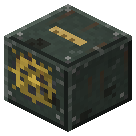

Drive Coupling


Between a pulley and an IC2 lathe, a Railcraft rolling machine or a Forestry machine (carpenter, squeezer, still, fermenter...; right next to it, not into BC pipes).
The coupling sits between a shaft pulley and someone else's machine, right next to it. It feeds the IC2 lathe (kU), the Railcraft rolling machine (16 hp -> 32 RF/t) and Forestry machines — carpenter, squeezer, still, fermenter, centrifuge, bottler, analyzer (8 hp -> 16 RF/t, since 1.57.8). So the carpenter already runs on steam in the second era. The fabricator (lamp works), the farm box and the bee house climatizer do not run from the shaft (1.57.11): power them with a Forestry electric engine from the IC2 grid, that is the third era. The coupling gives nothing to BC energy pipes or other RF machines. Against the front of an IC2 electric kinetic generator it is an electric shaft drive. Sneak + empty hand or a redstone signal — disengage.
### Electric drive: when you need it
A coupling right against the front of an IC2 electric kinetic generator (EKG) turns the shaft by itself, like a steam engine. Turn the generator with a wrench to face the coupling and put IC2 motors into its slots.
- One motor gives 25 hp: a fast motor through reduction gearing, the steel gears are in the EKG recipe. 4 motors — 100 hp, 10 — 250 hp.
- The price is 0.625 EU/t per 1 hp. A turbine or diesel generator head gives 0.5 EU per 1 hp, so the chain steam -> power -> shaft returns 80 %. A fifth goes into the wires and motors.
- Power is drawn only for what the shaft actually eats: machines idle — no current. On a line shared with steam it takes the load first, steam covers the rest.
Why bother, if steam straight onto the shaft gives the full 100 %? Boiler house next to the machines — build a shaft, it pays better. Workshop far away or machines spread over the base — run a cable. You give up 20 % of the power instead of a hundred shaft blocks with gearboxes, and one generator by the river feeds several workshops. That is how factories electrified in the 1890s–1920s: first a motor on the old line shaft, then a motor of its own on every machine (a Forestry electric engine right next to it).
Gears add no power: a gearbox trades speed for torque, and what goes in comes out. The Zavod shaft counts only hp, so 25 hp is the motor's own power, and the gearbox in the recipe explains why a fast motor turns the slow factory shaft.
Parameters
| Era | 3 — Electricity |
|---|---|
| Multiblock | no |
| Drive | shaft 16 / 8 / 4 hp, drives the shaft |
| Input energy | shaft or electric kinetic generator kU |
| Output | kU / RF / shaft |
| Made of | bronze gears, IC2 iron shaft, iron plates |
| hp (coupling at the RC rolling mill) | 16 |
| hp (coupling at the IC2 lathe) | 4 |
Numbers
| RF per 1 hp (coupling) | 2 RF |
|---|---|
| kU per 1 hp | 10 kU |
| coupling -> IC2 lathe | 4 hp |
| coupling -> RC rolling mill | 16 hp |
Fed by
- shaft ← Steam Engine, High-Pressure Steam Engine (transmission)
Feeds
- no Zavod machine uses its product